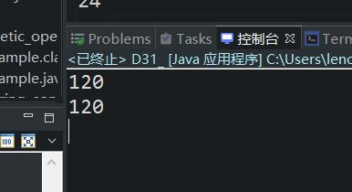

原文出处:本文由博客园博主心悦君兮君不知-睿提供。
原文连接:https://www.cnblogs.com/ruigege0000/p/11538235.html
原文连接:https://www.cnblogs.com/ruigege0000/p/11538235.html
一、实现阶乘（一种用递归，一种普通方法）
public static void main(String[] args) {
System.out.println(factorial(5));
System.out.println(factorial_recursion(5));
}
//普通循环结构实现阶乘
public static int factorial(int n) {
int i = 1;
int result = 1;
for(;i<=n;i++) {
result *= i;
}
return result;
}
//递归方法实现阶乘
public static int factorial_recursion(int n) {
if (n == 1) return 1;
else return (n * factorial_recursion(n-1));
};

二、面向对象（Java语言核心内容）
1.面向过程和面向对象的区别
（1）面向过程：主要关注点是：实现的具体过程，因果关系
优点：对于业务逻辑比较简单的程序，可以达到快速开发，前期投入成本低
缺点：采用面向对象的方式开发很难解决非常复杂的业务逻辑，另外面向过程的凡是导致最终的软件扩展能力差，另外，没有独立体的概念，所以无法达到组件复用。
（2）面向对象：主要关注点是：对象（独立体）能完成哪些功能。（独立显卡的开发思路）
优点：耦合度低，扩展能力强，更容易解决现实世界中复杂的业务逻辑，组件复用性
缺点：前期投入成本较高，需要进行独立体的抽取，大量的系统分析与设计。
（3）C语言是纯面向过程的，C++是半面向对象，Java是纯面向对象
（4）面向对象更符合人的思维方式，越来越多的新语言是面向对象。
2.面向对象的三大特性
（1）封装（2）继承（3）多态
三、源码：
D31_two_method_of_factorial.java
地址：
https://github.com/ruigege66/Java/blob/master/D31_two_method_of_factorial.java
2.CSDN：https://blog.csdn.net/weixin_44630050（心悦君兮君不知-睿）
3.博客园：https://www.cnblogs.com/ruigege0000/
4.欢迎关注微信公众号：傅里叶变换，个人公众号，仅用于学习交流，后台回复”礼包“，获取大数据学习资料